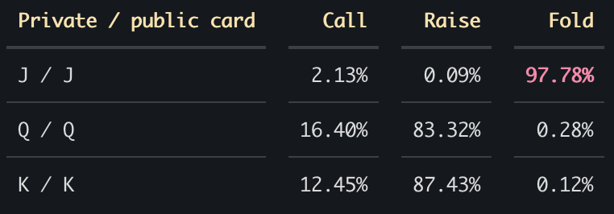

Reinforcement learning
Poker RL
About
Training Challenges & Key Learning Points
Challenges
Exploitability oscillates back and forth near the end of training, sometimes straying away from the minimum.
Key Learning Points
Instead of using one fixed frozen policy as oppponent, sample from multiple past policies where recent policies are sampled more frequently than earlier ones.
Adinaxnaxnasjnxaing points here.
Results
Shortcomings and Improvements
The following figure shows the action probabilities for particular game states where we committed 4 chips to the pot and the opponent committed 8 chips, with differing hands.
In this game of Leduc Poker, having a Pair guarantees a win as the opponent can only have a High Card. Hence, folding in such a situation would be throwing a win away, which is what the policy seems to be doing as seen from the extremely high likelihood of folding in this particular example. Despite this anomaly, the policy seems to act more rationally when it has a pair of Queens or Kings. The reason for this could be due to a low occurrence of these states during training, which could have led to the policy not learning the optimal action for these states. To accurately pinpoint the problem, we could log the number of visits to each state during training and perhaps the advantage computed for the actions to determine whether the model is being given the right directional signal.

In this game of Leduc Poker, having a Pair guarantees a win as the opponent can only have a High Card. Hence, folding in such a situation would be throwing a win away, which is what the policy seems to be doing as seen from the extremely high likelihood of folding in this particular example. Despite this anomaly, the policy seems to act more rationally when it has a pair of Queens or Kings. The reason for this could be due to a low occurrence of these states during training, which could have led to the policy not learning the optimal action for these states. To accurately pinpoint the problem, we could log the number of visits to each state during training and perhaps the advantage computed for the actions to determine whether the model is being given the right directional signal.